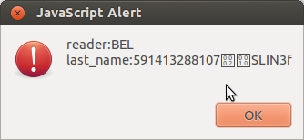

20130821 (Wednesday, 21 August 2013)¶
EIDReader learning to read Belgian eID cards¶
Continued from 2013-08-19.
Where to find the command APDUs for Belgian eID cards? The Belgians don’t seem to provide as good technical documentation as the Estonians... But Ha! the source code of eid-applet contains answers to most of my questions! For example Controller.java
Since eid-applet is LGPL and Lino GPL, I can AFAIK simply copy and paste the relevant excerpts from their code into my EIDReader applet (after adapting the copyright notice).
Voilà: EIDReader can now read both Estonian and Belgian eID cards. (At least almost... it does already recognize that it is a Belgian cards and even reads some data. But I must still be doing something wrong because it shows only the number of the card (and not all the public data as I’d like it to):
Discovered and fixed a bug in html2xhtml¶
Lino is so cool! I had no problem to reproduce an error which occured now and then in a production site. This was the traceback produced by the above snippet:
Traceback (most recent call last):
(...)
File "lino/mixins/printable.py", line 314, in f
Renderer(ar,tpl, context, target,**settings.SITE.appy_params).run()
File "/home/luc/pythonenvs/py27/local/lib/python2.7/site-packages/appy/pod/renderer.py", line 394, in run
self.finalize()
File "/home/luc/pythonenvs/py27/local/lib/python2.7/site-packages/appy/pod/renderer.py", line 546, in finalize
output = self.callLibreOffice(resultName, resultType)
File "/home/luc/pythonenvs/py27/local/lib/python2.7/site-packages/appy/pod/renderer.py", line 430, in callLibreOffice
Converter(resultName, resultType, self.ooPort).run()
File "/home/luc/pythonenvs/py27/local/lib/python2.7/site-packages/appy/pod/converter.py", line 243, in run
self.loadDocument()
File "/home/luc/pythonenvs/py27/local/lib/python2.7/site-packages/appy/pod/converter.py", line 214, in loadDocument
self.updateOdtDocument()
File "/home/luc/pythonenvs/py27/local/lib/python2.7/site-packages/appy/pod/converter.py", line 167, in updateOdtDocument
indexes = self.doc.getDocumentIndexes()
AttributeError: 'NoneType' object has no attribute 'getDocumentIndexes'
Here is how I discovered the reason.
Note
While writing this blog post I tested it using:
$ python -m doctest docs/blog/2013/0821.rst`
It is not part of the standard test suite because it fails when there is no LibreOffice server running.
>>> import os
>>> os.environ['DJANGO_SETTINGS_MODULE'] = 'lino_welfare.settings.test'
>>> from lino.api.shell import *
>>> from pprint import pprint
>>> ses = settings.SITE.login('rolf')
>>> ses.set_language('de')
>>> obj = jobs.Contract.objects.get(pk=1)
>>> obj.clear_cache()
>>> obj.responsibilities = '<p><span style="font-family: Arial; font-size: x-small;"><br /></span></p>'
>>> obj.save()
>>> pprint(ses.run(obj.do_print))
{'message': u'Dokument Art.60\xa77-Konvention#1 (Charlotte Collard) wurde generiert.',
'open_url': u'/media/cache/appypdf/jobs.Contract-1.pdf',
'refresh': True,
'success': True}
Until here it works. The problem comes when responsibilities contains certain “invalid” chunk of HTML.
>>> obj.responsibilities = '<p><span style="font-family: Arial; font-size: x-small;">\n<div style="color: blue !important; font-family: Verdana, Arial, Helvetica, sans-serif; font-size: 10px; background-image: initial; background-attachment: initial; background-origin: initial; background-clip: initial; background-color: #ffffff; margin: 8px;">\n<ul>\n<li><strong>Unterhalt und Reinigung der Büros, Versammlungsräume, Pausenräume, Flure, Sanitären Anlagen.</strong></li>\n</ul>\n</div>\n</span></p>'
>>> obj.save()
>>> obj.clear_cache()
>>> pprint(ses.run(obj.do_print))
Traceback (most recent call last):
...
AttributeError: 'NoneType' object has no attribute 'getDocumentIndexes'
The culprit in our case seems to be the (superfluous) <div> tag, probably inserted by TinyMCE. Removing the complete <div> tag makes it work:
>>> obj.responsibilities = '<p><span style="font-family: Arial; font-size: x-small;">\n<ul>\n<li><strong>Unterhalt und Reinigung der Büros, Versammlungsräume, Pausenräume, Flure, Sanitären Anlagen.</strong></li>\n</ul>\n</span></p>'
>>> obj.save()
>>> obj.clear_cache()
>>> pprint(ses.run(obj.do_print))
{'message': u'Dokument Art.60\xa77-Konvention#1 (Charlotte Collard) wurde generiert.',
'open_url': u'/media/cache/appypdf/jobs.Contract-1.pdf',
'refresh': True,
'success': True}
Now we try to further identify the culprit. Restore the <div> tag and remove only the attributes “background-image: initial; background-attachment: initial; background-origin: initial; background-clip: initial;” from the <div> still doesn’t work (so these are not the reason):
>>> obj.responsibilities = '<p><span style="font-family: Arial; font-size: x-small;">\n<div style="color: blue !important; font-family: Verdana, Arial, Helvetica, sans-serif; font-size: 10px; background-color: #ffffff; margin: 8px;">\n<ul>\n<li><strong>Unterhalt und Reinigung der Büros, Versammlungsräume, Pausenräume, Flure, Sanitären Anlagen.</strong></li>\n</ul>\n</div>\n</span></p>'
>>> obj.save()
>>> obj.clear_cache()
>>> pprint(ses.run(obj.do_print))
Traceback (most recent call last):
...
AttributeError: 'NoneType' object has no attribute 'getDocumentIndexes'
The color: blue !important; part also is not the culprit:
>>> obj.responsibilities = '<p><span style="font-family: Arial; font-size: x-small;">\n<div style="font-family: Verdana, Arial, Helvetica, sans-serif; font-size: 10px; background-image: initial; background-attachment: initial; background-origin: initial; background-clip: initial; background-color: #ffffff; margin: 8px;">\n<ul>\n<li><strong>Unterhalt und Reinigung der Büros, Versammlungsräume, Pausenräume, Flure, Sanitären Anlagen.</strong></li>\n</ul>\n</div>\n</span></p>'
>>> obj.save()
>>> obj.clear_cache()
>>> pprint(ses.run(obj.do_print))
Traceback (most recent call last):
...
AttributeError: 'NoneType' object has no attribute 'getDocumentIndexes'
Tilt! Inverting the ordering of <span> and <div> tags finally does make it work:
>>> obj.responsibilities = '<p><div style="color: blue !important; font-family: Verdana, Arial, Helvetica, sans-serif; font-size: 10px; background-image: initial; background-attachment: initial; background-origin: initial; background-clip: initial; background-color: #ffffff; margin: 8px;">\n<span style="font-family: Arial; font-size: x-small;">\n<ul>\n<li><strong>Unterhalt und Reinigung der Büros, Versammlungsräume, Pausenräume, Flure, Sanitären Anlagen.</strong></li>\n</ul>\n</span>\n</div></p>'
>>> obj.save()
>>> obj.clear_cache()
>>> pprint(ses.run(obj.do_print))
{'message': u'Dokument Art.60\xa77-Konvention#1 (Charlotte Collard) wurde generiert.',
'open_url': u'/media/cache/appypdf/jobs.Contract-1.pdf',
'refresh': True,
'success': True}
So this is the reason. Let’s simplify the HTML and formulate our statement: appy_pod has a problem with the following chunk:
>>> obj.responsibilities = '<p><span><div>Some text</div></span></p>'
>>> obj.save()
>>> obj.clear_cache()
>>> pprint(ses.run(obj.do_print))
Traceback (most recent call last):
...
AttributeError: 'NoneType' object has no attribute 'getDocumentIndexes'
Test cases like this one should not modify the demo database because the test suite runner doesn’t reinisitialize the database for each case. So we restore the original value (which was an empty string):
>>> obj.responsibilities = ''
>>> obj.save()
Wrote another page for Gaëtan to reproduce all this without Lino installed:
As explained there, I then understood that
a <div> inside a <span> is simply invalid XHTML,
so instead of filing a bug for Gaëtan
I fixed it and added a test case in my own code:
lino.utils.html2xhtml.
(So what? I worked more than 3 hours to understand and fix a little bug: is that cool? No, that‘s not cool, but Lino is cool: all this would have taken many days without the possibility of reproducing the original problem in a simple blog entry!)